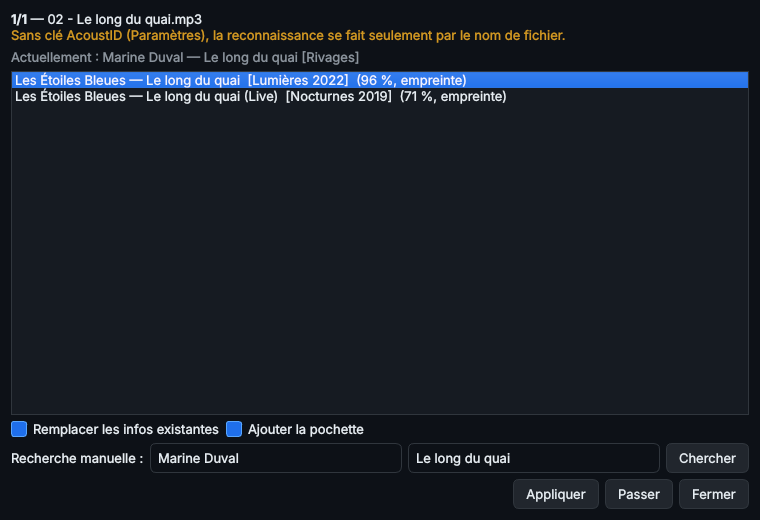
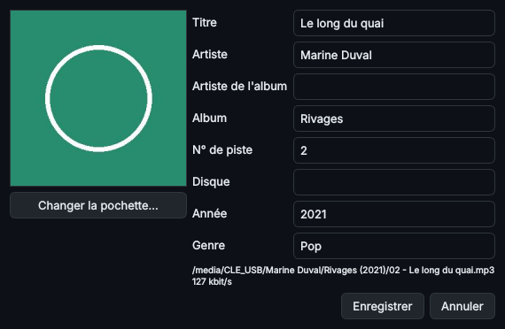
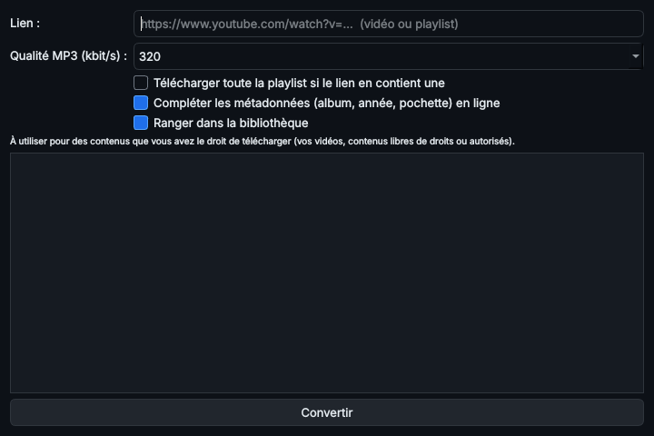

6. Identifier, modifier les infos, CD et YouTube
Identifier un titre « façon Shazam »
Musicothèque écoute le morceau, calcule son empreinte sonore et la compare à la base AcoustID et MusicBrainz (gratuites). Elle retrouve le titre, l'artiste, l'album, l'année, le genre, le numéro de piste et la pochette.

Les propositions trouvées par l'empreinte sonore, avec leur score.
- Un ou quelques titres : clic droit ▸ Identifier (Ctrl+I). Une liste de propositions s'affiche, avec un score de confiance. Choisissez la bonne, puis Appliquer.
- Toute la bibliothèque : Identifier ▸ Compléter automatiquement les infos manquantes. Seules les propositions sûres sont appliquées ; les autres sont listées pour vérification.
- Aucune proposition ne convient ? Saisissez l'artiste et le titre dans Recherche manuelle, puis Chercher. Passer va au titre suivant.
- Sans clé AcoustID, l'identification se fait d'après le nom du fichier (moins fiable). La clé se saisit dans Fichier ▸ Paramètres (voir chapitre 2).
Fichiers en lecture seule ou protégés
Pour compléter un titre, Musicothèque doit pouvoir modifier le fichier. Avant de l'écouter, elle vérifie qu'il est modifiable :
- Fichier en lecture seule (fréquent après une copie depuis un CD) : la lecture seule est retirée automatiquement, le journal affiche « 🔓 lecture seule retirée », et le fichier est complété normalement.
- Lecture seule impossible à retirer (fichier protégé par Windows, ouvert dans un autre programme, clé USB verrouillée) : le fichier est mis de côté (« ⏸ mis de côté »), et le traitement continue avec les fichiers suivants.
Fichiers aux informations endommagées (message « not a Frame instance », en-tête ID3 illisible…) : Musicothèque répare d'abord les tags automatiquement. Elle récupère ce qui reste lisible (titre, artiste, album, année, pochette, y compris l'ancien tag ID3v1), retire l'en-tête abîmé et écrit des tags neufs. Le son n'est jamais modifié : la partie audio est comparée octet par octet avant et après, et au moindre écart l'original est remis tel quel. Le journal affiche « 🔧 tags réparés ». Cette réparation concerne les MP3.
Si la réparation est impossible, les fichiers sont placés dans le dossier tampon _Fichiers à vérifier, à l'intérieur du dossier de destination (ou de la bibliothèque), et le traitement continue. Le fichier _raisons.txt de ce dossier indique pour chacun son emplacement d'origine et la raison. Ce dossier est ignoré par le rangement ; Annuler le dernier rangement remet ces fichiers à leur place.
La liste se retrouve dans Identifier ▸ Fichiers mis de côté (sur le Pi : Outils ▸ Compléter les infos manquantes). Fermez le programme qui utilise le fichier ou déverrouillez la clé, puis Réessayer. Les fichiers réussis quittent la liste.
Modifier les informations à la main
Clic droit ▸ Modifier les informations (Ctrl+E).

Modifier les informations d'un titre.
- Avec plusieurs titres sélectionnés, seuls les champs modifiés sont appliqués à tous (pratique pour corriger un nom d'album).
- Pochette : Changer la pochette… (image JPG ou PNG), ou Identifier pour la récupérer en ligne.
- Les informations sont écrites dans le fichier lui-même (MP3, FLAC, M4A, OGG, WMA) : elles suivent le fichier sur un autre appareil.
CD audio vers MP3
- Insérez le CD, puis Convertir ▸ CD audio → MP3.
- Le lecteur et le disque sont détectés, et les titres, l'album et la pochette sont recherchés sur MusicBrainz.
- Choisissez la qualité (320 kbit/s par défaut), puis Extraire en MP3. Le bouton Lire les infos du disque affiche d'abord la liste des titres.
- Les MP3 arrivent directement dans la bibliothèque, classés en
Artiste\Album (Année).
L'extraction corrige les erreurs de lecture d'un disque rayé ; elle est donc parfois lente sur un vieux CD.
Lien YouTube vers MP3
- Convertir ▸ Lien YouTube → MP3 (Ctrl+Y).
- Collez le lien d'une vidéo ou d'une playlist.
- Musicothèque télécharge le son, le convertit en MP3, reprend le titre et l'artiste de la vidéo et, si l'option est cochée, complète en ligne l'album, l'année et la pochette, puis range le fichier dans la bibliothèque.

Convertir un lien YouTube en MP3.
Réservez cette fonction aux contenus que vous avez le droit de télécharger.
◀ 5. Ranger et classer un emplacement · Sommaire · 7. Réglages du son et profils audio ▶